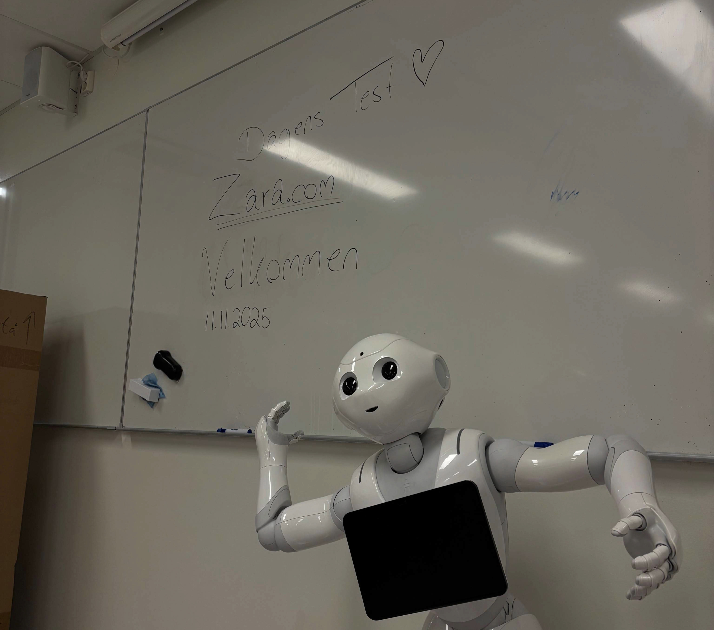
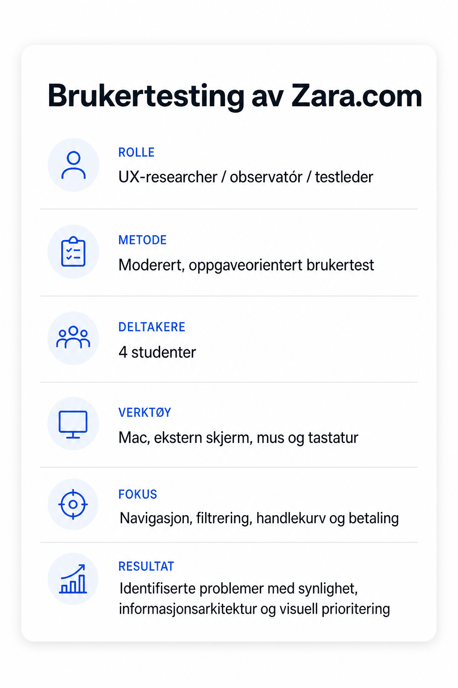
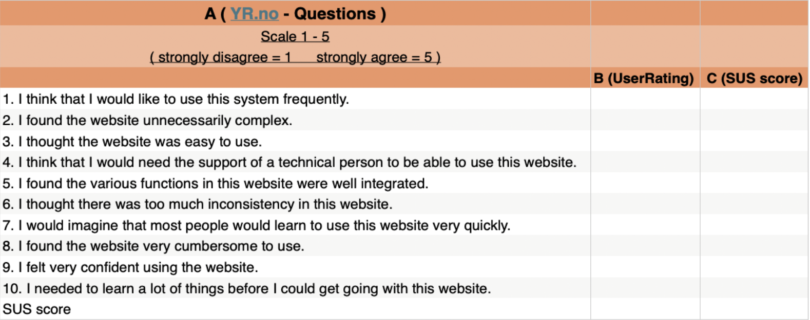
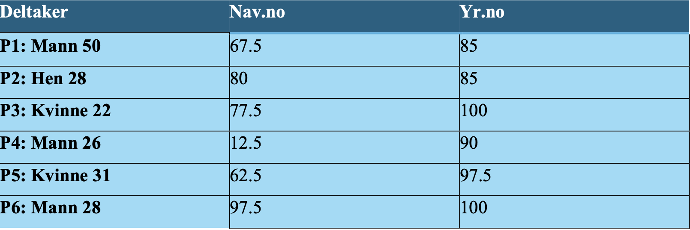
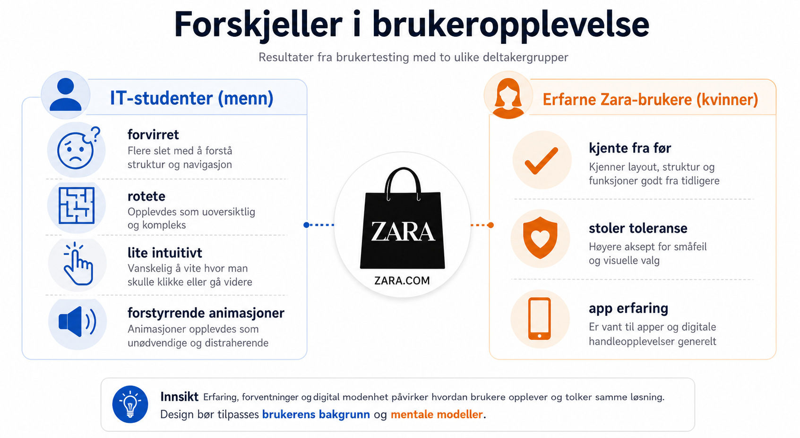

Prosjekt 03 · Research & analyse
Brukertesting
& Analyse
En dypdykk i hvordan jeg planlegger, gjennomfører og analyserer
brukertester for å ta designbeslutninger basert på data, ikke synsing.
Brukertesting
Intervjuer
Dataanalyse
Gruppeprosjekt
testleder
Hvorfor brukertesting
I dette prosjektet undersøkte vi brukervennligheten til Zara sin
nettbutikk.
Utgangspunktet var eksamensoppgaven, hvor vi skulle
planlegge og gjennomføre en oppgaveorientert brukertest av en digital
tjeneste.
Vi valgte Zara.com fordi nettsiden kombinerer flere sentrale
funksjoner i en nettbutikk: produktkategorier, filtrering,
produktvisning, handlekurv, betaling og kundeservice.
Dette gjorde nettsiden egnet for å undersøke hele brukerreisen, fra første møte med
forsiden til en mulig gjennomføring av et kjøp.
Målet med testingen var å finne ut:
Om brukerne forstod hva slags nettside Zara.com var.
Om det var enkelt å navigere mellom kategorier.
Om brukerne klarte å filtrere produkter etter pris, farge og størrelse.
Om det var intuitivt å legge produkter i handlekurven.
Om brukerne fant informasjon om betaling og faktura.
Hvilke visuelle og funksjonelle elementer som skapte forvirring eller irritasjon.
Vi ønsket ikke bare å undersøke om brukerne klarte å gjennomføre oppgavene, men også å forstå hvordan de tenkte underveis.
Derfor kombinerte vi observasjon, oppgaveorientert testing og tenke-høyt-metoden.

Metode
Vi testet fire studenter i målgruppen:
To mannlige IT-studenter uten tidligere erfaring med Zara-nettbutikken.
To kvinnelige studenter på samme alder som hadde erfaring med Zara,
hovedsakelig gjennom Zara-appen.
Målgruppen vi tok utgangspunkt i var kvinner og menn, hovedsakelig ungdommer og unge voksne mellom 16 og 30
år.
Deltakerne ble rekruttert fra Kristiania-campus og vår egen klasse.
Utvalget ga oss mulighet til å sammenligne tilbakemeldinger fra brukere
med ulik erfaring og teknisk bakgrunn. Samtidig er det viktig å
presisere at fire deltakere er et lite utvalg, og at resultatene derfor
ikke kan generaliseres til alle Zara-brukere.
Gjennomføring : Testene ble gjennomført fysisk i et rolig lab-rom på Kristiania.
Vi brukte Mac koblet til ekstern skjerm, tastatur og mus.
Under testene hadde gruppemedlemmene ulike roller:
Én person var testleder og kommuniserte med deltakeren.
Én observatør fulgte med på skjermen og brukerens handlinger.
Én observatør fulgte med på kroppsspråk og ansiktsuttrykk.
Testen var moderert. Testlederen ga deltakerne én oppgave om gangen, observerte hvordan de jobbet og stilte eventuelle oppfølgingsspørsmål
etterpå.
Deltakerne ble også oppfordret til å tenke høyt mens de løste oppgavene.
Vi informerte deltakerne om formålet med testen, hvordan resultatene skulle brukes og at svarene ville behandles anonymt.
Deltakerne fikk åtte oppgaver.



Funn & analyse
Viktigste Funn
Testingen viste at Zara.com har flere funksjoner som fungerer godt, men
også flere elementer som gjør brukerreisen mindre oversiktlig.
-
Hovedmeny - Alle deltagere fant produktkategoriene uten veiledning.
-
Filtrering - Alle klarte raskt å filtrere etter pris, farge og
størrelse.
-
Visuelt uttrykk - Flere opplevde forsiden som rotete og distraherende.
-
Animasjoner - Animasjonene ble av flere oppfattet som forstyrrende
-
Valg av størrelse - Størrelse var vanskligere å oppdage fordi brukeren
først måtte trykke på "Legg til".
-
Handlekurv - Funksjoner for å slette eller endre antall produkter var
lite synlige.
-
Betaling og faktura - Dette var den mest krevende oppgaven å løse.
-
Produktvisning - Store bilder tok mye plass, og enkelte bilder ble
oppfattet som lite relevante.
Konkrete utsagn:
En deltaker oppsummerte opplevelsen slik:
«Det er visse ting du forstår hvordan fungerer med en gang, mens andre ting må du tenke litt over.»
Flere av deltakere mente at nettsiden var mulig å bruke, men at enkelte funksjoner var unødvendig vanskelige å finne. De mannlige deltakerne beskrev blant annet siden som rotete og lite intuitiv, mens de kvinnelige deltakerne hadde større toleranse for løsningen fordi de kjente Zara fra før.
Hva overrasket oss?
Det mest overraskende var at nettsiden kunne oppleves som både funksjonell og forvirrende samtidig. Alle deltakerne klarte å gjennomføre flere av oppgavene, men dette betydde ikke nødvendigvis at løsningen var intuitiv.
Filtreringsfunksjonen fungerte svært godt, mens informasjon om betaling og faktura var vanskelig å finne. Dette viser at en nettside kan ha gode enkeltfunksjoner, samtidig som enkelte deler av informasjonsarkitekturen skaper problemer.
Det var også interessant å se hvordan tidligere erfaring påvirket resultatene. Brukere som kjente Zara fra før, brukte kunnskapen sin til å kompensere for svakheter i grensesnittet.

Resultat & læring
Prosjektet ga oss praktisk erfaring med hele prosessen rundt en brukertest, fra planlegging og rekruttering til gjennomføring, observasjon og analyse.
Vi lærte blant annet at:
Test oppgaver bør være konkrete og basert på realistiske brukssituasjoner.
Det er viktig å observere hva brukeren faktisk gjør, ikke bare lytte til hva brukeren sier.
En bruker kan gjennomføre en oppgave uten at løsningen oppleves som enkel.
Tidligere erfaring med en tjeneste påvirker hvordan brukeren vurderer den.
Moderatoren må være forsiktig med å hjelpe, slik at testresultatet ikke blir påvirket.
Flere observatører kan gi et mer nyansert bilde av både handlinger, kommentarer og kroppsspråk.
Et lite testutvalg kan avdekke konkrete problemer, men gir ikke grunnlag for å si at alle brukere vil ha samme opplevelse.
Vi testet løsningen med ekte brukere i et fysisk testmiljø.
Det gjorde det mulig å observere både navigasjonen på skjermen og deltakernes reaksjoner underveis.
Testingen avdekket særlig problemer knyttet til informasjonsarkitektur, synlighet og plassering av funksjoner.
Som gruppe fikk vi også erfaring med samarbeid og rollefordeling. Vi måtte planlegge testen sammen, fordele ansvar under gjennomføringen og diskutere funnene i etterkant. En viktig læring var at observatører kan legge merke til forskjellige ting, og at felles analyse derfor kan gi et bedre helhetsbilde.
Forslag til forbedringer
Basert på funnene våre ville vi prioritert følgende forbedringer:
Gjøre «Betaling og faktura» mer synlig i navigasjonen.
Gjøre størrelsesvelgeren tydeligere på produktsiden.
Gjøre funksjonene for å slette og endre antall synlige i handlekurven.
Redusere mengden animasjoner på forsiden.
Forenkle produktvisningen slik at relevante produkter får mer oppmerksomhet.
Gjøre priser synlige uavhengig av hvilken visningsmodus brukeren velger.
Teste en forbedret versjon med nye brukere for å se om problemene faktisk blir redusert.